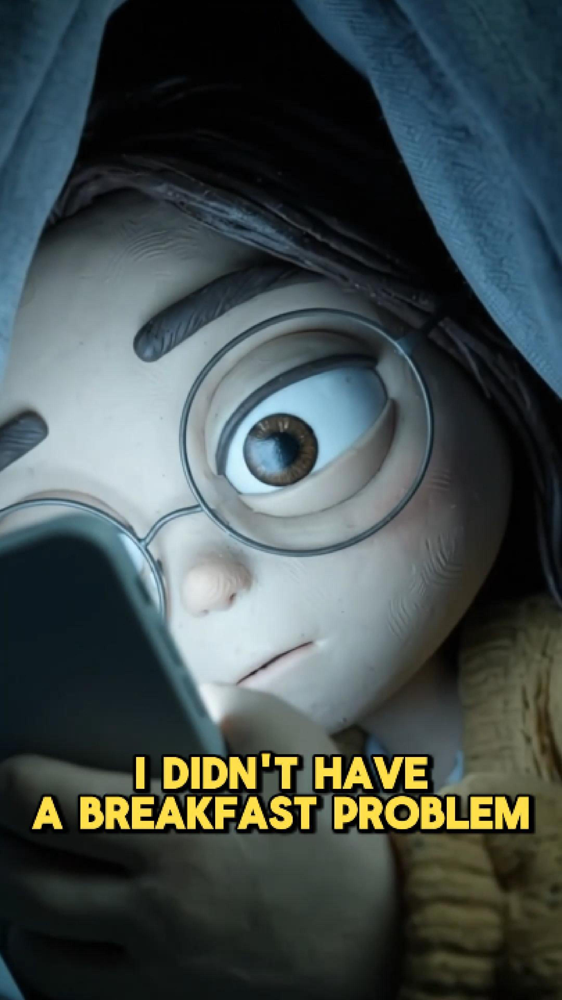

Colour tells the story
Blue-grey before the product. The first warmth arrives with the oat packet. The ending is golden, making the mood change visible even with the sound off.
Oats Overnight / Spec concept / 2026
A claymation music video that starts with the morning problem. Then introduces the breakfast fix.
Concept & creative strategy by Archilles Vivero

01 / Project snapshot
A 1:22 claymation music video ad for people who skip breakfast and have never thought about buying Oats Overnight.
Discount-first ads speak to people already shopping.
02The insightIt is the twenty minutes at 6am, not breakfast itself.
03The ideaA clay music video. A 30-second fix the night before.
04The storyThree acts. Cool blue becomes warm gold.
05The rolloutA full film for reach. Shorter cuts for selling.
06The testAttention, new-customer share & cost per purchase.
02 / The challenge
My creative review of the brand’s existing ad set found that nearly every ad opened with a discount (25% off), a product shot, or “20g protein”. Those messages speak to people who already want a protein breakfast.
The opportunity was the bigger group who skip breakfast and do not see it as a problem. The goal: name their morning problem first, and only then show the product.
“I didn’t have a breakfast problem.
I had a 6am problem.”
Direction 1 of a three-direction creative brief: people do not skip breakfast because they dislike it. They skip it because the options take twenty minutes they do not have. The fix is thirty seconds the night before.
Clay makes a tired morning funny, not sad. A character can be exhausted and messy without the story feeling like a complaint.
A catchy song is designed to keep people watching long enough for the problem to land before the product appears.
Most food ads in the reviewed Meta context look like live-action UGC. A clay music video gives this concept a different presence in the feed.
03 / How the story works
Explore the three acts below. Each button cues that moment in the film; playback starts only when you press Play.
Concept & creative strategy: Archilles Vivero
The film could not load. You can still explore the story and strategy below.
Film ready. Press Play to watch.
Blue-grey before the product. The first warmth arrives with the oat packet. The ending is golden, making the mood change visible even with the sound off.
The bedroom and car return with the same framing: tired and blue first, calm and golden later.
Jo lip-syncs in six shots: the two choruses and the final offer. The rest of the song plays over the action.
“25% off your first box” appears in the final seconds, after the problem has landed.
04 / Getting it seen
Explore the intended role of each version. These are rollout recommendations, not separate playable cuts.
1:22 / Awareness
The full story introduces the morning problem to new audiences, with video views as the intended use.
Every version opens on the hook line in the first three seconds and ends on Jo holding the bottle.
Lyrics are burned in, three to six words at a time. Music-only moments remain uncaptioned so the jokes land.
“I thought I hated breakfast. Turns out I hated the twenty minutes. 30 seconds the night before. 25% off your first box.”
Shop Now, with Learn More as a low-cost comparison test for people who are new to the brand.
05 / How I would measure success
No live results yet. The proposed comparison is against the brand’s current discount-first ads: can a problem-first story bring in buyers those ads miss?
Attention
Hook rate: the share of viewers still watching after three seconds.
Retention
Average watch time and the share who reach the product at 0:50.
New customers
Share of buyers who are new customers, compared with the existing ads.
Conversion
Cost per purchase, comparing the cutdowns with the full video.
See the idea in action
The finished film is also featured in the Creatives section of my portfolio.
Watch video in Creatives ↗